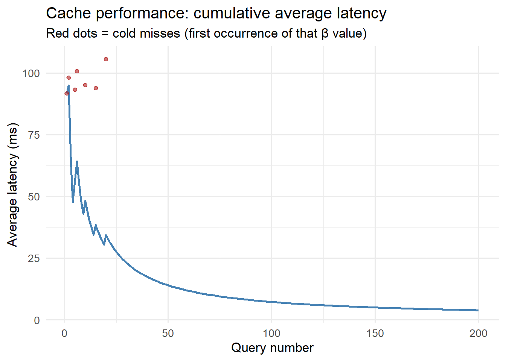

Caching Surrogate Model Outputs for Sub-Second API Responses
Repeated scenario queries should cost microseconds, not seconds. Redis, in-memory caching, and cache invalidation strategies for simulation services. Skill 9 of 20.
business skills
caching
Redis
performance
R
Author
Jong-Hoon Kim
Published
April 24, 2026
1 The performance problem
An analyst opens your dashboard and selects “Run scenario: 30% transmission reduction for district_a”. Your system runs the surrogate model, queries TimescaleDB, formats the response — 800 milliseconds. She tweaks the slider to 32% and clicks again — another 800 ms. Thirty interactions later, she is frustrated.
But all those slider positions are over the same data. The EnKF state was last updated 12 hours ago, and the surrogate model output for \((β_{\text{reduced}}, \text{district\_a})\) is fully deterministic. The second, third, and subsequent identical requests are wasted compute.
Caching(1) stores the result of an expensive computation and returns the stored value instantly on repeated requests — as long as the underlying data has not changed.
2 Two levels of caching
Level 1 — In-process (R session). The memoise package (2) wraps any R function so its results are stored in memory. Cost: zero infrastructure.
Level 2 — Shared cache (Redis). A Redis key-value store holds results accessible by all workers and persists across process restarts. Cost: one Redis container.
3 Level 1: memoise in R
library(memoise)# Expensive surrogate model call (simulated with Sys.sleep)slow_surrogate <-function(beta, location_id) {Sys.sleep(0.1) # simulate 100ms model evaluationlist(peak_cases =round(100000*0.4* beta /0.35),peak_day =round(25/ beta),location_id = location_id )}# Memoised version — results cached after first callfast_surrogate <-memoise(slow_surrogate)# Time 10 calls: first is slow, rest are instanttimes <-numeric(5)for (i inseq_len(5)) { t0 <-proc.time()["elapsed"] result <-fast_surrogate(beta =0.35, location_id ="district_a") times[i] <-proc.time()["elapsed"] - t0}cat(sprintf("Call times (s): %s\n",paste(round(times, 4), collapse =", ")))
Call times (s): 0.1, 0.06, 0, 0, 0
cat("First call: model evaluated. Calls 2-5: cache hit.\n")
First call: model evaluated. Calls 2-5: cache hit.
library(ggplot2)# Simulate cache performance over many repeated parameter combinationsset.seed(42)n_queries <-200beta_values <-sample(seq(0.2, 0.5, by =0.05), n_queries, replace =TRUE)cache_hits <-!duplicated(beta_values) # first occurrence = colddf_cache <-data.frame(query =seq_len(n_queries),beta = beta_values,cold = cache_hits,latency_ms =ifelse(!cache_hits, 0.5, # cache hit: ~0.5ms100+rnorm(n_queries, 0, 5)) # cold: ~100ms)df_cache$latency_ms[df_cache$latency_ms <0] <-0.5# Running average latencydf_cache$avg_latency <-cumsum(df_cache$latency_ms) /seq_len(n_queries)ggplot(df_cache, aes(x = query, y = avg_latency)) +geom_line(colour ="steelblue", linewidth =1) +geom_point(data = df_cache[df_cache$cold, ],aes(y = latency_ms), colour ="firebrick",size =1.5, alpha =0.6) +labs(x ="Query number", y ="Average latency (ms)",title ="Cache performance: cumulative average latency",subtitle ="Red dots = cold misses (first occurrence of that β value)") +theme_minimal(base_size =13)

Cache performance: first call (cold) takes ~100ms; subsequent identical calls (warm) take under 1ms. This is the same pattern whether the cache is in-process (memoise) or Redis.
4 Level 2: Redis cache with Python
In the production FastAPI service, Redis (1) provides a shared cache across multiple worker processes:
import redisimport jsonimport hashlibfrom functools import wrapsr = redis.Redis(host="localhost", port=6379, db=0)def cache_result(ttl_seconds: int=3600):"""Decorator: cache function result in Redis for ttl_seconds."""def decorator(fn):@wraps(fn)def wrapper(*args, **kwargs):# Create deterministic cache key from arguments key_data = json.dumps({"args": args, "kwargs": kwargs}, sort_keys=True) cache_key =f"{fn.__name__}:{hashlib.md5(key_data.encode()).hexdigest()}"# Try cache first cached = r.get(cache_key)if cached isnotNone:return json.loads(cached)# Cache miss: compute and store result = fn(*args, **kwargs) r.setex(cache_key, ttl_seconds, json.dumps(result))return resultreturn wrapperreturn decorator@cache_result(ttl_seconds=3600) # cache for 1 hourdef run_surrogate(beta: float, location_id: str) ->dict:# ... expensive surrogate model evaluation ...pass
5 Cache invalidation: the hard part
The classic programming joke: “There are only two hard things in computer science: cache invalidation and naming things.”
For an epidemic digital twin, the cache becomes stale when:
New EnKF update — state estimate changed → all scenario projections for that location are invalid
New surveillance data — observations changed → forecasts derived from them are invalid
Model refit — surrogate retrained on new simulator runs → all surrogate outputs are invalid
Invalidation strategy: tag each cache entry with the run_id of the last EnKF update. When a new EnKF run completes, increment a counter and use it in all future cache keys — old keys naturally expire (TTL) without explicit deletion.
# Cache versioning: key includes run_idmake_cache_key <-function(fn_name, beta, location, run_id) {paste0(fn_name, ":", location, ":", beta, ":", run_id)}# When EnKF updates, new run_id invalidates all old cache entriesrun_id_v1 <-"enkf-2024-04-01"run_id_v2 <-"enkf-2024-04-02"# new updatekey_v1 <-make_cache_key("surrogate", 0.35, "district_a", run_id_v1)key_v2 <-make_cache_key("surrogate", 0.35, "district_a", run_id_v2)cat("Old key:", key_v1, "\n")
Old key: surrogate:district_a:0.35:enkf-2024-04-01
cat("New key:", key_v2, "\n")
New key: surrogate:district_a:0.35:enkf-2024-04-02
cat("Old entries expire naturally; no explicit flush needed.\n")
Old entries expire naturally; no explicit flush needed.
6 Sizing the cache
For a typical digital twin with 20 districts × 50 scenario parameter combinations × 1KB per result = 1MB per EnKF run. Redis defaults to 256MB — more than enough for years of runs. Use MAXMEMORY-POLICY allkeys-lru to evict the least-recently-used entries when memory fills.
7 References
1.
Redis Ltd. Redis: The real-time data platform [Internet]. 2009. Available from: https://redis.io